Account
Approved application · approved logoEvery image below is an actual canonical PNG. Open an image for its full resolution. These are authored design scenes, not current-app browser captures.
Active sessions · error
sessions-errorActions and implementation pointers
+ New page · Journal · Explore · All pages · ⌄ · Reflections · › · Reading · Try again · Ask Journl · Today’s Journal · Close · Instant · Thinking
apps/web/src/components/auth/settings/account/user-profile.tsxapps/web/src/components/auth/settings/security/security-settings.tsxapps/web/src/components/auth/settings/security/active-sessions.tsxapps/web/src/components/auth/settings/security/session-actions.tsx

SHA256 6736ff7698e1bb1d87948abf7a7d818788afd1c53b275b9cfaf26dbf74f40cc0

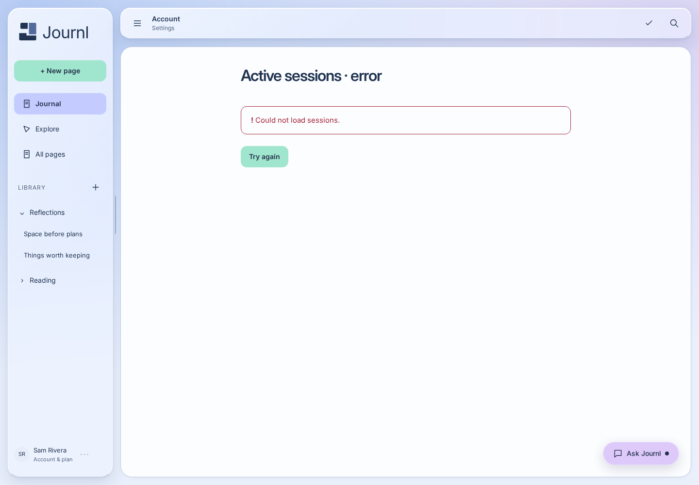
SHA256 7d1db76dc3ee8bd3368edfeb49cd9050be8d73f2cd6909f409e4914e00513ad8

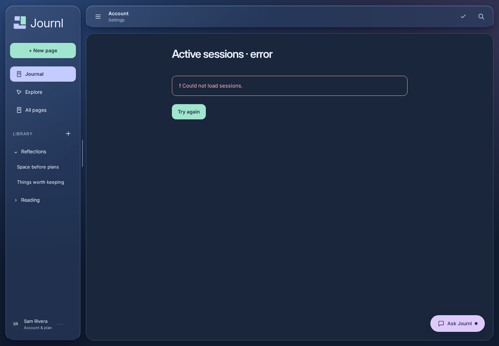
SHA256 dcc51ab83c6c72e569094d0889ed4e18e3a5b9868f05a90c8b1615e915654a70

SHA256 cf88c89c9c469df90fc30ae74f1a9cb3151eb8eae5b48385045454a800e91842
Active sessions · revoke-one
sessions-revoke-oneActions and implementation pointers
× · Cancel · Sign out device
apps/web/src/components/auth/settings/account/user-profile.tsxapps/web/src/components/auth/settings/security/security-settings.tsxapps/web/src/components/auth/settings/security/active-sessions.tsxapps/web/src/components/auth/settings/security/session-actions.tsx

SHA256 98d217bfcd0a76aa74c2b8a539f1dc562340e79f21409b7fd14bc866f69f1fa3

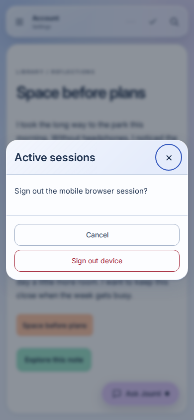
SHA256 71dac8f46ea7170d2c1dbc5aadc58763b08244c08e75231c1c67d58145f1a031

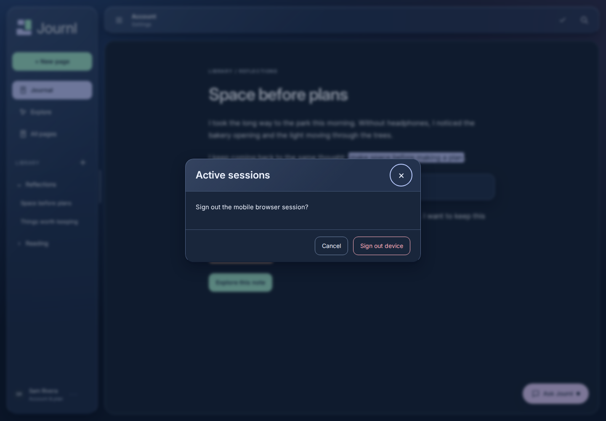
SHA256 1eb3bbc470b439e3cd8ec7abb18f59612bd14513890b1b7ee805922e033c6c6e

SHA256 a8aa7a159985361cfbb15626497ef84903542dc0bc2239adf8b40aee91d7dad0
Active sessions · revoke-other
sessions-revoke-otherActions and implementation pointers
× · Cancel · Sign out other devices
apps/web/src/components/auth/settings/account/user-profile.tsxapps/web/src/components/auth/settings/security/security-settings.tsxapps/web/src/components/auth/settings/security/active-sessions.tsxapps/web/src/components/auth/settings/security/session-actions.tsx

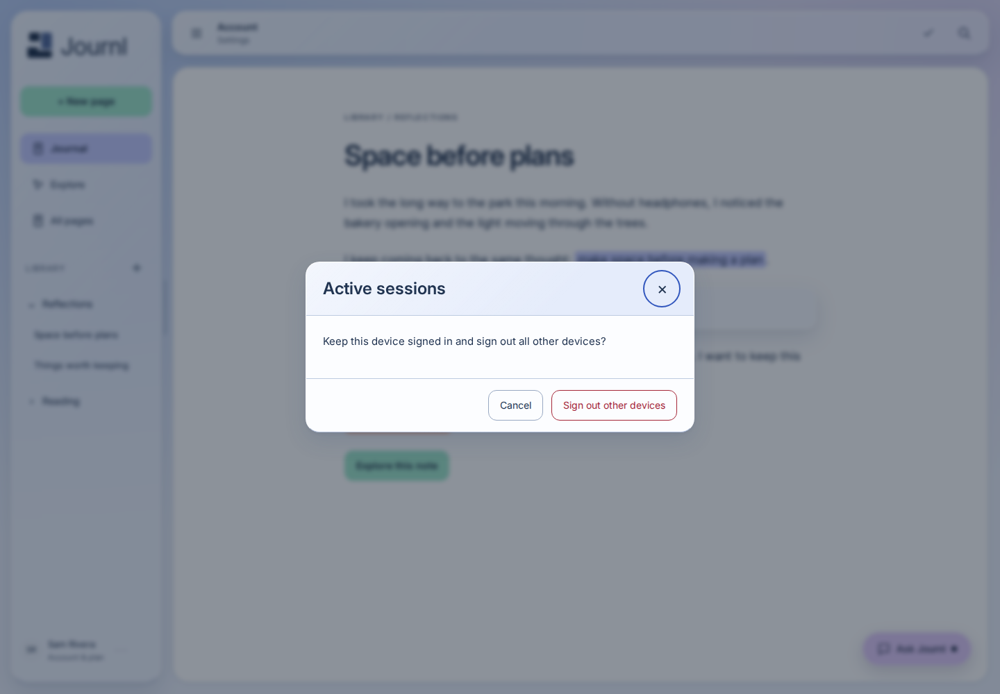
SHA256 779aa080dff7b8492b76324c18680846b969e27f6ba748d9b1879922abccb73c

SHA256 668f767446893f810df374251dd41169c71271545574a02b40615bee48016446

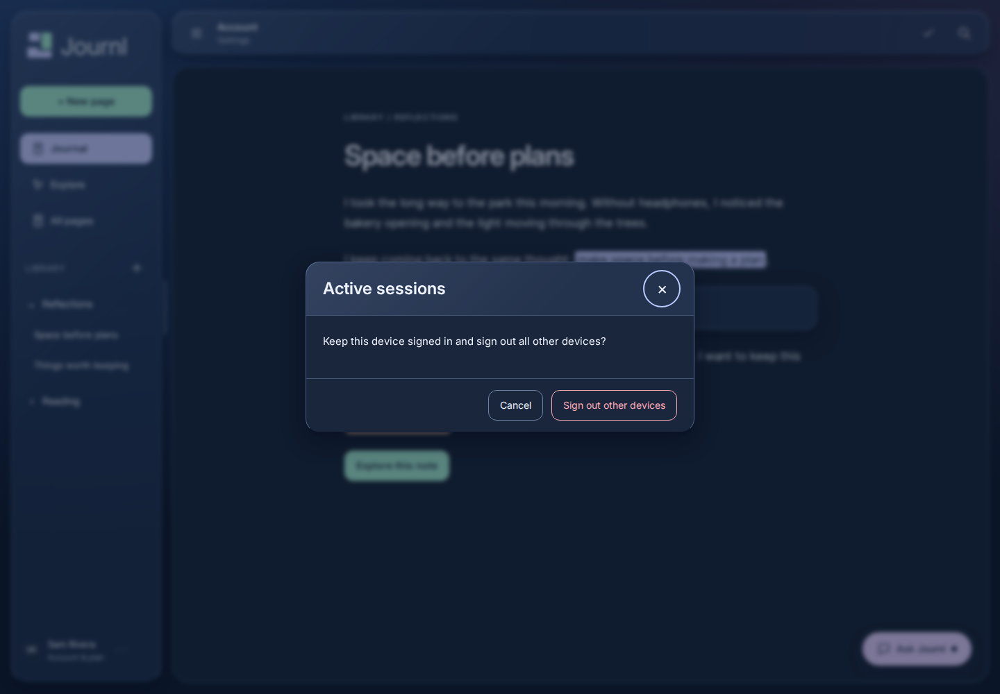
SHA256 f24b00d8ba9a6f43ee781eeab23fcb612625e4775cea622f059aa98341dc8cbf

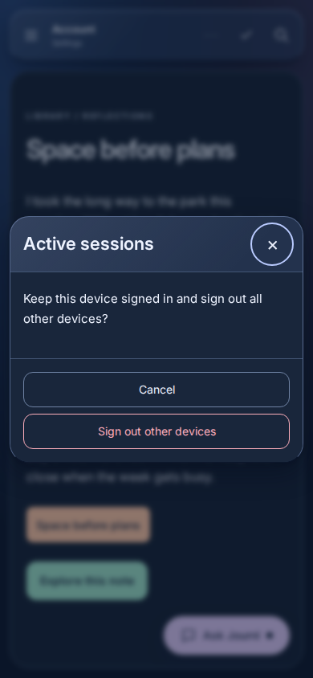
SHA256 a7190a1df4ed3ac1da0bf33ca0e8151dc24c4c4df36d184390bcc00bb5cb79bf
Active sessions · revoke-all
sessions-revoke-allActions and implementation pointers
× · Cancel · Sign out everywhere
apps/web/src/components/auth/settings/account/user-profile.tsxapps/web/src/components/auth/settings/security/security-settings.tsxapps/web/src/components/auth/settings/security/active-sessions.tsxapps/web/src/components/auth/settings/security/session-actions.tsx

SHA256 1f465c2a14980c230a28afb598092b87612492b94fcbe7b1a0b82d38345edbf8

SHA256 6205df2ef980fe35085d30033b287bd18a951bb456b0ff0ed55faa5630e561e2

SHA256 11f79c3706df7a9385fe3faa36ddc902cf8e2cbf126899fcbc12018123c0432f

SHA256 5377d0f7825f0d4512df537fa5d526d92bc2cfd14a259973b87fd8a94b96027f
Active sessions · pending
sessions-pendingActions and implementation pointers
+ New page · Journal · Explore · All pages · ⌄ · Reflections · › · Reading · Confirm · Ask Journl · Today’s Journal · Close · Instant · Thinking
apps/web/src/components/auth/settings/account/user-profile.tsxapps/web/src/components/auth/settings/security/security-settings.tsxapps/web/src/components/auth/settings/security/active-sessions.tsxapps/web/src/components/auth/settings/security/session-actions.tsx

SHA256 6f90c43af03bb7bb85f2c07757c0173a518ade9d86d33bd3b674729d9f238567

SHA256 79a704c190332f0cd5968c41839d46ae806001290fdcd8550f00b7d6a004c492

SHA256 9d5e71c136acce89e1ad830f8208c34719c43b8cdbbde4a86c02cd2863866089

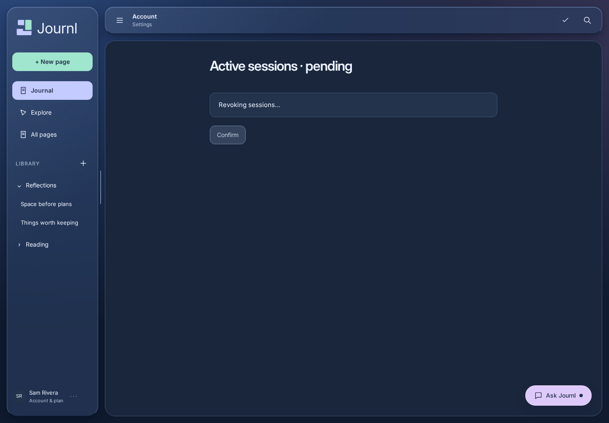
SHA256 0f29e95f65fb8ba6bbe5f1bda2b98a2e5741d646754a45d0c4ca4314de021ac9
Active sessions · revoke-error
sessions-revoke-errorActions and implementation pointers
× · Cancel · Try again
apps/web/src/components/auth/settings/account/user-profile.tsxapps/web/src/components/auth/settings/security/security-settings.tsxapps/web/src/components/auth/settings/security/active-sessions.tsxapps/web/src/components/auth/settings/security/session-actions.tsx

SHA256 4aaa6ce43020ea22687e97ffc84aafc4c92304f310fd396e15f09f99c0f3c8d2

SHA256 d79e35223e621350882df1d237033fe89c0115f9f35cfcf84113a5785be9661b

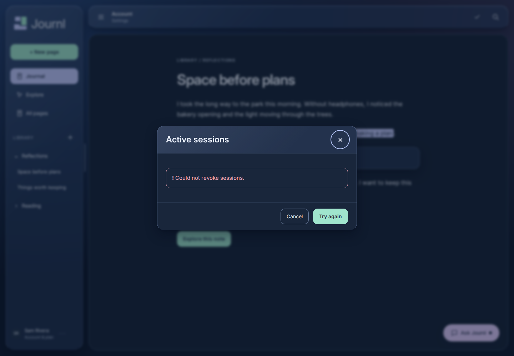
SHA256 81ec33e70b7ee70efea08e3f4b1bd6a8d845a46086d17c3b82c1f47db3436800

SHA256 3fc9773e12b14fc8874822aa40ae3673d762753f9de30147d10317cc04710fe9
Appearance · saving
appearance-savingActions and implementation pointers
+ New page · Journal · Explore · All pages · ⌄ · Reflections · › · Reading · System · Light · Dark · Ask Journl · Today’s Journal · Close · Instant · Thinking
apps/web/src/components/auth/settings/account/user-profile.tsxapps/web/src/components/auth/settings/security/security-settings.tsxapps/web/src/components/auth/settings/security/active-sessions.tsx

SHA256 62c02a80211b72208223f62b23b67a7ce92d3022613877e90b60adb5a076f014

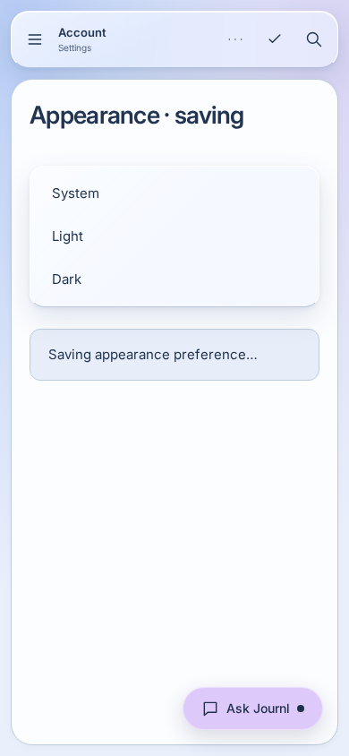
SHA256 3950f58b2cdc7ded85954e3d9e81437f0d4f80a4cb7e5913043eea5c8a8e7a29

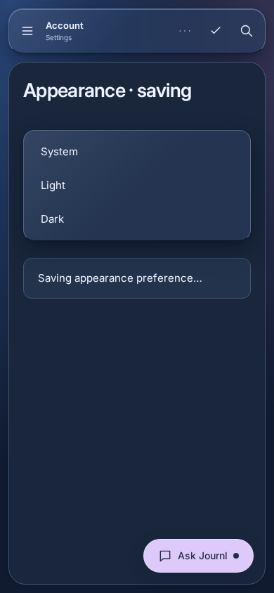
SHA256 a0402cb7465c926ff686a250ae2920a730d47f9ed6c7318e43e03274502c2991

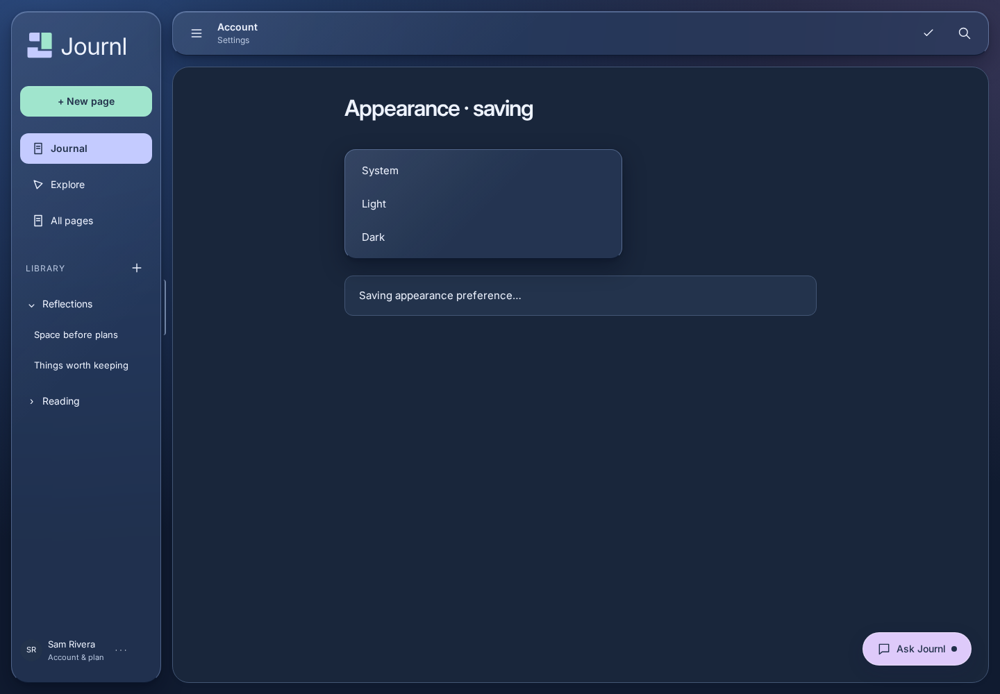
SHA256 9e8cbc7e4f2e676b0dc570950e598c9b4d78fac50fd427cd8796dc6c7c08fd93
Appearance · error
appearance-errorActions and implementation pointers
+ New page · Journal · Explore · All pages · ⌄ · Reflections · › · Reading · System · Light · Dark · Ask Journl · Today’s Journal · Close · Instant · Thinking
apps/web/src/components/auth/settings/account/user-profile.tsxapps/web/src/components/auth/settings/security/security-settings.tsxapps/web/src/components/auth/settings/security/active-sessions.tsx

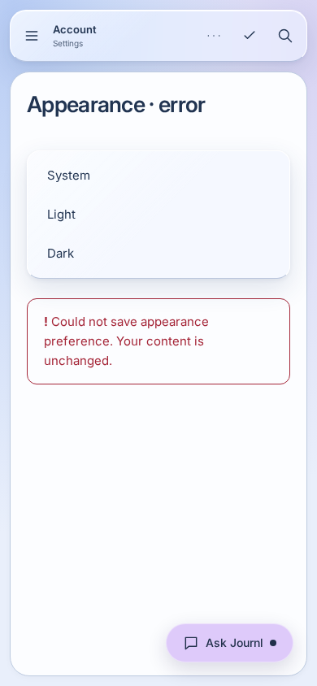
SHA256 26e3c51256399eb1012d370391a8bd5dc2836824938e724147889845e0e36add

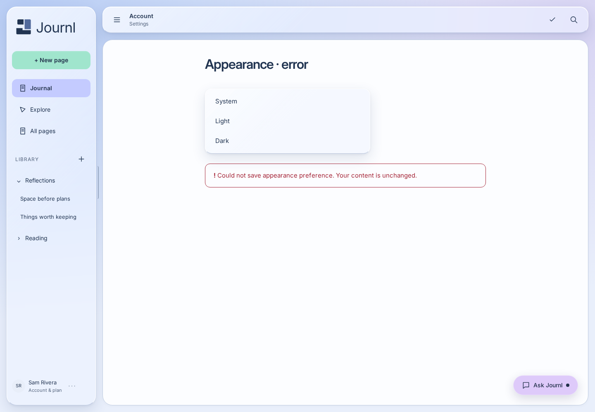
SHA256 4314742949b08800b57a8558565374ef05503a699ffb477787d9b1d8e1f00cdc

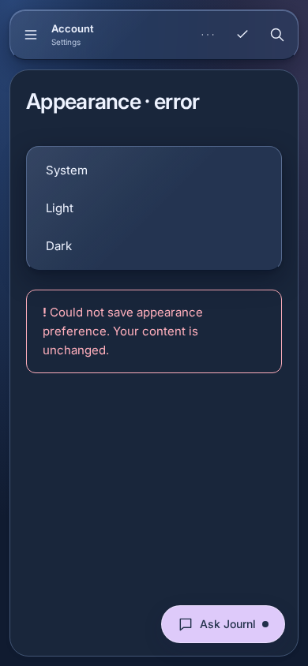
SHA256 3be7e9775f3033dd5705ccd1e683d03ffd53fefa3e4bbee6f3ef6aa390d40559

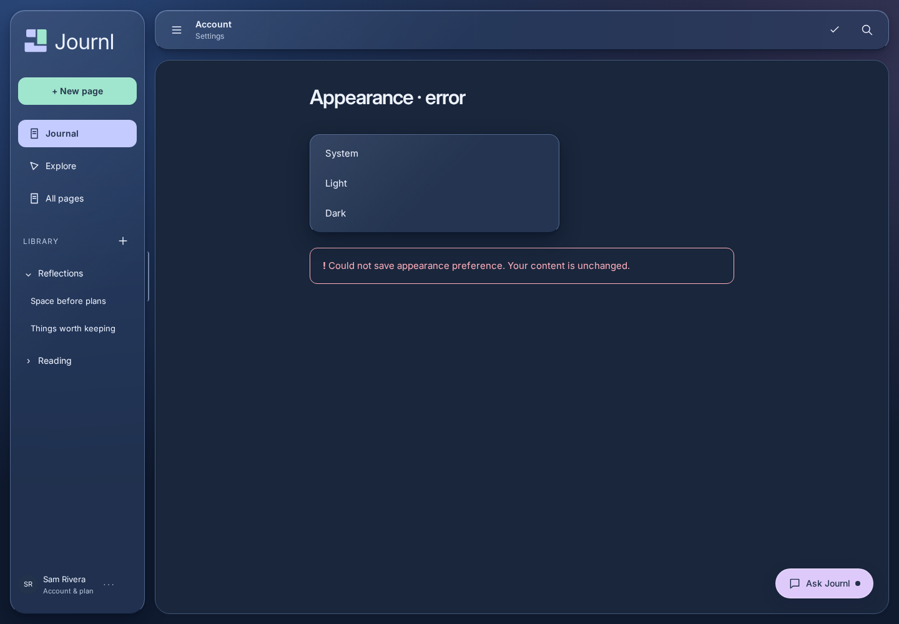
SHA256 17ab00774f471d76b1e4ca4348ed2dfdca7e900610b30211e7289ea1d5cc7e20
Account capabilities · configured state
provider-configurationActions and implementation pointers
+ New page · Journal · Explore · All pages · ⌄ · Reflections · › · Reading · Security · Appearance · Ask Journl · Today’s Journal · Close · Instant · Thinking
apps/web/src/components/auth/better-auth-provider.tsxapps/web/src/components/auth/auth-view.tsx

SHA256 37d61ff17705d03200c501fba74d1d0288c5dce84bb1a5e9bff7cef6917cd7dd

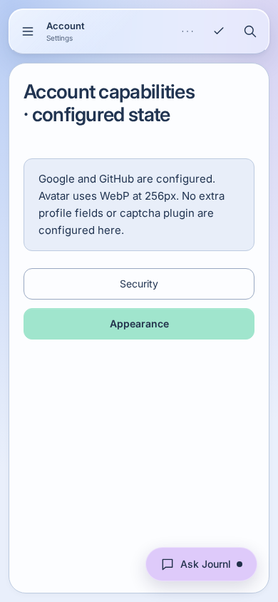
SHA256 8f3dd3a9160fc45f5351d7f1903ba054c921d7b366bfe2df5a3e473cc4450d26

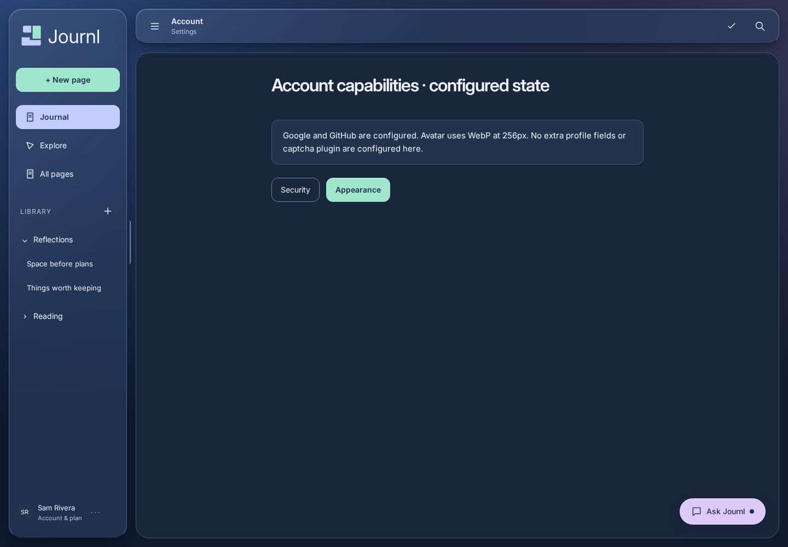
SHA256 f0828576118c8ca6e93b1fa38b2a6d3b892057eedafe24c85b230452defcb6b7

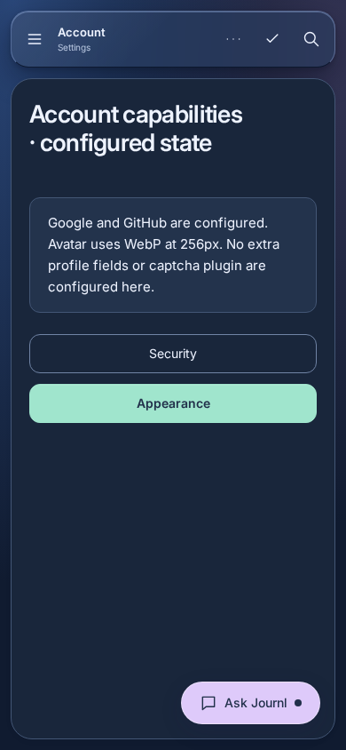
SHA256 ab3db508e69fb0608c3e3a99999c3799386cd897419f94e02d05bb236374a11a